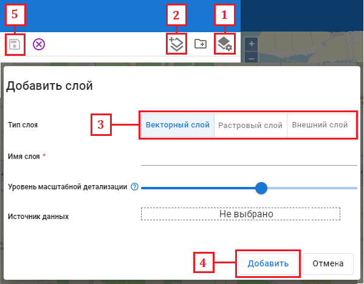

Настройка структуры проекта
Подключение слоя
Подключение слоя необходимо для размещения векторных или растровых данных на карту в виде слоя.
1. Нажмите «Настроить слои проекта» (1) и выберите «Подключить слой» (2).
2. В поле «Тип слоя»
(3) выберите тип слоя который нужно загрузить.

3. Заполните обязательные поля и нажмите «Добавить» (4).
4. Нажмите кнопку «Сохранить для всех пользователей» (5).
В результате слой отображен на карте и может быть сопоставлен с другими картографическими данными.